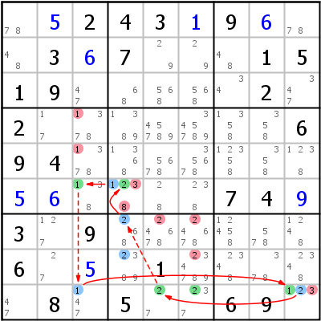

HoDoKu Solving Technique Index: Example for "Grouped Continuous Nice Loop/AIC Loop"

Original sudoku:
..243.9...3.7...1519.....2.2.......694.............74.3.9......6...1.....8.5..69.
Use the following line if you want to load the sudoku in HoDoKu:
:0709:1238:.+5243+19+6..3+67...1519.....2.2.......694.......+5+6....74+93.9......6.+5.1.....8.5..69.:825 826 833 837 839 254 255 256 779 789 495 496 499 799:143 153 275 276 286 364 399 864:
The following representation can be pasted in most Sudoku programs:
.---------------.---------------------.------------------. | 78 5 2 | 4 3 1 | 9 6 78 | | 48 3 6 | 7 29 29 | 48 1 5 | | 1 9 47 | 68 568 568 | 34 2 347 | :---------------+---------------------+------------------: | 2 17 1378 | 1389 45789 345789 | 1358 358 6 | | 9 4 1378 | 1368 5678 35678 | 12358 358 1238 | | 5 6 138 | 1238 28 238 | 7 4 9 | :---------------+---------------------+------------------: | 3 127 9 | 268 24678 24678 | 12458 578 1248 | | 6 27 5 | 2389 1 234789 | 2348 378 2348 | | 47 8 147 | 5 27 237 | 6 9 123 | '---------------'---------------------'------------------'
Representation of the step:
.----------------.--------------------------.-------------------. | 78 5 2 | 4 3 1 | 9 6 78 | | 48 3 6 | 7 29 29 | 48 1 5 | | 1 9 47 | 68 568 568 | 34 2 347 | :----------------+--------------------------+-------------------: | 2 17 -1378 | 1389 45789 345789 | 1358 358 6 | | 9 4 -1378 | 1368 5678 35678 | 12358 358 1238 | | 5 6 *138 | *12-3-8 28 238 | 7 4 9 | :----------------+--------------------------+-------------------: | 3 127 9 | *268 -24678 -24678 | 12458 578 1248 | | 6 27 5 | *2389 1 -234789 | 2348 378 2348 | | 47 8 *147 | 5 *27 *237 | 6 9 *12-3 | '----------------'--------------------------'-------------------' Grouped Continuous Nice Loop 2= r6c4 =1= r6c3 -1- r9c3 =1= r9c9 =2= r9c56 -2- r78c4 =2= r6c4 =1 => r45c3<>1, r7c56,r8c6<>2, r6c4,r9c9<>3, r6c4<>8
Copyright © 2008-12 by Bernhard Hobiger
Last modified on May 5, 2025 by shorty#3746
(based of the 1to9only Github repo)
All material on this page is licensed under the GNU FDLv1.3.